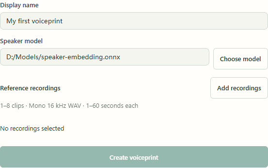
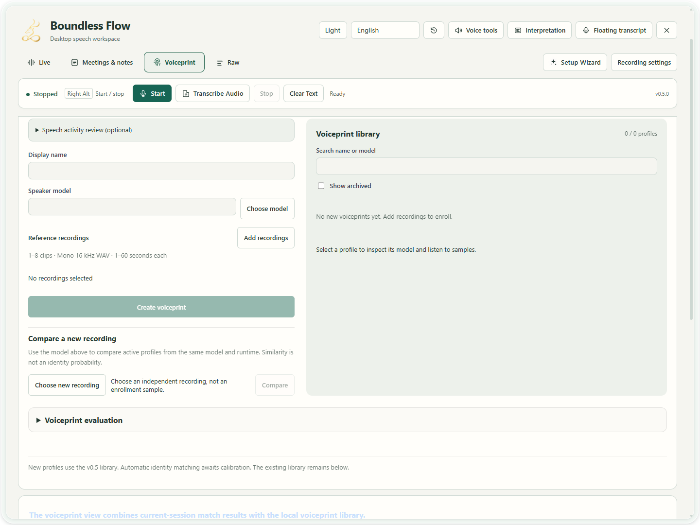
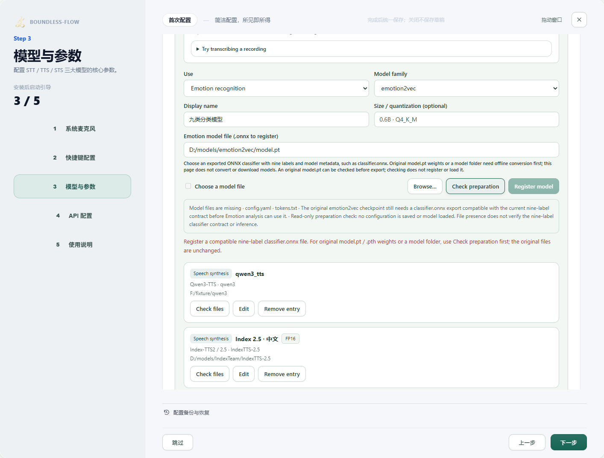
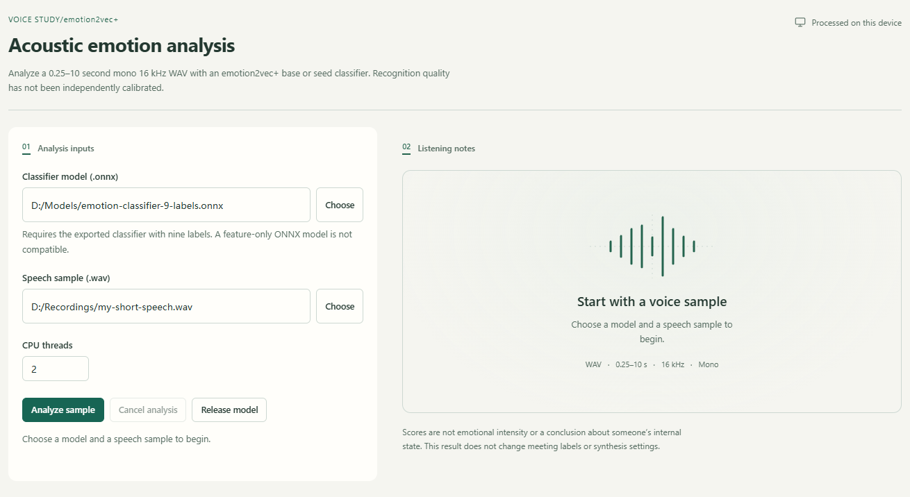

Scenario guide
Voiceprints: enroll, compare and review
Use independent recordings to assist speaker review and retain uncertainty.
What you will get
Create a traceable profile and inspect comparison candidates. Similarity is not identity probability.
Before you start
- A compatible speaker-embedding ONNX model. A transcription model cannot replace a voiceprint model.
- One to eight independent mono 16 kHz WAVs from one speaker, each 1–60 seconds. Use a separate recording for testing rather than repeating enrollment audio.
- Before calibration, new profiles supply candidates for human review. Unknown-speaker, cross-microphone and natural-emotion quality still requires evaluation.
- Optional independent emotion analysis needs an emotion2vec+ base/seed nine-label classifier ONNX and a 0.25–10 second mono 16 kHz WAV. It differs from the speaker model and does not enroll a voiceprint or rename meeting speakers.
Step by step
- 01
Choose the model and name
Open Voiceprints, enter a Display name and use Choose model to select your saved speaker-embedding ONNX file. Copy model path in the download guide gives a folder; select the actual .onnx inside it. Do not choose SenseVoice, Whisper, an emotion classifier or another transcription checkpoint. Changing the model may make older profiles incompatible.

App operation example · No model started; replace example paths with your files. Select to enlarge. - 1Choose a speaker ONNX file, not a transcription model.
- 2Add independent recordings from one person, then wait for inspection.
- 3No recordings are selected here, so Create is unavailable.
- 02
Add, inspect and listen to references
Click Add recordings and select 1–8 independent mono 16 kHz WAVs from the same person, each 1–60 seconds. Wait for inspection and resolve each message; use Recheck recording after a change. Constant, near-empty, damaged or duplicate recordings cannot continue; remove that entry and choose another clip. Silence with an isolated click is not a voiceprint reference; choose continuous single-speaker speech. Listen to low-level warnings: they do not establish speech. Create voiceprint remains unavailable until the name, model and valid recordings are ready. Speech-interval detection is optional; your first enrollment does not require a separate VAD installation.
App operation example · No model started; replace example paths with your files. Select to enlarge. - 1Choose a speaker ONNX file, not a transcription model.
- 2Add independent recordings from one person, then wait for inspection.
- 3No recordings are selected here, so Create is unavailable.
- 03
Create and inspect the profile
After confirming the references contain the intended speaker, click Create voiceprint. Select the new profile on the right, listen to samples and inspect name and model. Uncalibrated profiles do not perform automatic identity matching. Archiving hides the profile without deleting its recordings. Use Cancel task during processing and wait for cancellation before changing inputs. Cancellation does not delete original recordings or existing profiles.

Actual app UI · Select to enlarge; example data is not your result - 1Enter a display name for enrollment.
- 2Select the matching voiceprint model.
- 3Add reference recordings from the same speaker.
- 04
Compare independent audio and retain ambiguity
Under Compare a new recording, choose a separate recording and select Compare. Inspect candidate scores, the top-two margin and excluded profiles. Do not treat the top candidate as confirmed identity when results are tied, uncalibrated or incompatible. After changing the model, select the original profile and use Re-extract with current model before comparing independent audio. Earlier revisions remain; re-extraction does not perform calibration.
Actual app UI · Select to enlarge; example data is not your result - 1Enter a display name for enrollment.
- 2Select the matching voiceprint model.
- 3Add reference recordings from the same speaker.
- 05
Review audio and scope before meeting use
Listen to meeting audio and review speaker labels before explicitly changing passages. Voiceprint evaluation requires independent samples and calibration. Source-audio verification establishes file consistency, not correct identity labels or quality. Review detected emotion against audio too.

Actual app UI · Select to enlarge; example data is not your result - 06
Register and check the emotion model
In Setup → Models and parameters → Local model library, set Use to Emotion recognition and browse to the model file. For the original model.pt, use Check preparation to review missing companion files and classifier requirements. This check does not save settings, load a model or download files. Once you have a compatible nine-label classifier.onnx, register it here and save Setup. Source checkpoints cannot be registered as usable classifiers. Check files also reviews preparation for existing entries.

Current setup UI · Controlled preparation example; no emotion model run - 1Use Check preparation before registering source weights.
- 2Review missing files and classifier requirements. This controlled example does not run a model.
- 07
Choose a short recording, analyze it and review the audio
Open Voice Tools → 06 Emotion and choose the classifier you registered from the configured models. Choose a 0.25–10 second mono 16 kHz WAV under Speech sample; start with the default two CPU threads. Silence or a constant signal cannot support emotion analysis; choose a recording containing speech. With model and audio selected, click Analyze sample and wait. Use Cancel analysis when needed and wait for completion. Results are uncalibrated model candidates, not emotional intensity or a conclusion about internal state. Retain uncertainty for unknown, other or ambiguous results. This tool does not automatically change meeting labels or cloning parameters.

App operation example · No model started; replace example paths with your files. Select to enlarge. - 1Choose an ONNX export with the nine-label classifier.
- 2Choose a 0.25–10 second mono 16 kHz WAV.
- 3Inputs enable analysis; this capture does not run it.
- 4Release model memory after analysis.
- 08
Release memory afterward; use the cloning guide for expression
After analysis, use Release model when you no longer need consecutive samples; the next analysis reloads it. Leaving the panel does not cancel a running job, so cancel explicitly when stopping. To make synthesized speech sound happier, calmer or more excited, follow Keep the voice, adjust expression. Analysis scores do not automatically populate synthesis controls.
App operation example · No model started; replace example paths with your files. Select to enlarge. - 1Choose an ONNX export with the nine-label classifier.
- 2Choose a 0.25–10 second mono 16 kHz WAV.
- 3Inputs enable analysis; this capture does not run it.
- 4Release model memory after analysis.


How to verify success
Name, model and samples can be inspected; independent comparison returns candidates or an explicit uncertain status; manual renaming changes only confirmed passages.
If something goes wrong
Invalid format / duplicate audio
Prepare mono 16 kHz, 1–60 second WAVs and use independent recordings. Enrollment does not disguise short material with silence.
No compatible profiles
Use the same model and runtime version. Re-extract older profiles with that model when necessary, then compare an independent recording.
The top candidate is not confirmed
Uncertainty is intentional. With missing calibration, insufficient margin or unknown speakers, review manually and collect independent material instead of lowering thresholds to force a match.
Incompatible emotion model / unavailable action
Select the nine-label classifier ONNX and a valid short WAV, and wait for the previous job to end. Matching extensions do not establish compatibility. For missing components or model-format errors, preserve diagnostics rather than padding, repeating audio or changing extensions.